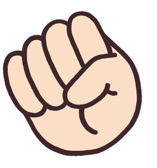

Main
[당 신]
[Computer]



가위바위보 게임
가위바위보 게임을 5판 진행하여 컴퓨터와 플레이어중 더 점수가 높은 쪽의 승리
====== 20.10.11 ======
====== 20.10.12 ======
====== 20.10.13 ======
====== 20.10.15 ======
====== 20.10.16 ======
MURIT / JunGameⓒ kjt3015@naver.com